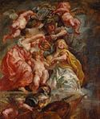

From
the collection

Peter
Paul Rubens
The Union of England and Scotland (Charles I as the Prince of Wales)
1630
Oil on panel
H.33-1/4 x W.25-7/8 in.
The William Hood Dunwoody Fund
While
in London in 1629 negotiating a peace settlement between England, France,
and Spain, Rubens was knighted by King Charles I and asked to design
ceiling decorations honoring the reign of James I, Charles' father,
for the Banqueting House in Whitehall.
James' dual sovereignty, as king of both Scotland and England, is celebrated by the coronation depicted here. Aided by Athena, the Greek goddess of war and wisdom, female personifications of England and Scotland crown the young prince, while two cherubs bearing the royal coat of arms fly overhead and a third sets fire to a pile of weapons and armor in the lower foreground.
Because
the scene was meant to be viewed from below, the figures have all been
severely foreshortened. The energetic brushwork is characteristic of
Ruben's mature style.